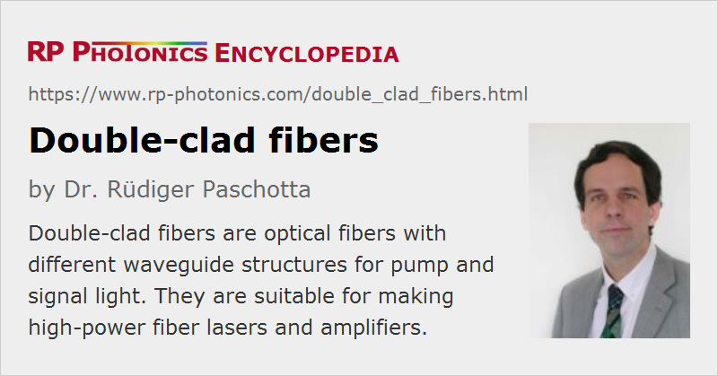

Double-clad Fibers
Definition: optical fibers with different waveguide structures for pump and signal light
Alternative term: cladding-pumped fibers
More general term: rare-earth-doped fibers
German: Doppelkernfasern
Category: fiber optics and waveguides
How to cite the article; suggest additional literature
Author: Dr. Rüdiger Paschotta
Double-clad fibers are an important technology in the area of active fiber optics, particularly for high-power fiber lasers and amplifiers. Only with double-clad fibers, very high output powers of fiber-based amplifiers and lasers are possible.
A fiber laser or amplifier based on an ordinary doped single-mode fiber can generate a diffraction-limited output, but it restricts the pump sources to those with diffraction-limited beam quality and thus normally to those with low power. On the other hand, the use of multimode fibers usually (although not always) leads to poor beam quality. However, a high beam quality is highly desirable for many applications.
This dilemma has been resolved with the invention of double-clad fiber designs, which allow cladding pumping of fiber devices. Here, the laser light propagates in a single-mode (or multimode) core, which is surrounded by an inner cladding in which the pump light propagates. Only the core (or sometimes a ring around the core) is rare-earth-doped. The pump light is restricted to the inner cladding by an outer cladding with lower refractive index, and also partly propagates in the single-mode core, where it can be absorbed by the laser-active ions. The inner cladding has a significantly larger area (compared with that of the core) and typically a much higher numerical aperture, so that it can support a large number of propagation modes, allowing the efficient launch of the output, e.g. of high-power laser diodes (e.g. beam-shaped high-power diode bars), despite their poor beam quality.

The pump light does not necessarily need to be injected into the fiber ends, as shown in Figure 1. It is also possible to use side pumping techniques, where access to the fiber ends is not required for pumping. For example, coated V grooves cut into the inner cladding can be used to reflect pump light into the inner cladding.
Double-clad Fiber Designs
There are a variety of different designs of double-clad fibers. Figure 2 shows the fiber cross-sections for the most important design types.
The simplest kind of design has a circular pump cladding and a centered core (first design in Figure 2). This is relatively easy to make and use, but in this kind of fibers there are propagation modes of the inner cladding (related to helical rays) which have hardly any overlap with the core, so that some significant part of the pump light exhibits incomplete absorption. As a result, the gain and power efficiency are compromised. To a limited extent, this problem can be solved by strongly coiling the fiber.

Modes with poor core overlap can be avoided by using a modified design with a lower symmetry. Examples are designs with an off-centered core or a non-circular (e.g. elliptical, D-shaped or rectangular) inner cladding. Such pump claddings are also often better matching the properties of pump sources such as beam-shaped diode bars. However, if the overall fiber (not only the cladding) has a non-circular shape, this may cause problems when fusion splicing the fibers.

Double-clad fibers can also be made as photonic crystal fibers as shown in Figure 4. Here, the multimode pump core is suspended by very thin struts in the air cladding, through which the pump light cannot escape. Such a structure can have a very high numerical aperture of at least 0.6 for the pump light; this further reduces the requirements concerning the brightness of the pump source. The thickness of the struts can be chosen such that at the same time one achieves good mechanical stability, high thermal conductivity, and minimal pump losses. Another advantage of this type of fiber is that pump light is kept away from the protective polymer coating, avoiding any damage by absorbed pump light. The guidance of the core is achieved as in other photonic crystal fibers.
Parameters and Fabrication Methods of Double-clad Fibers
Besides the properties of the fiber core, the ratio of the areas of inner cladding and core is an important parameter. This area ratio should not be too large, because otherwise the effective pump absorption length becomes large, and the pump intensity in the core is small, resulting in low excitation levels which can also compromise the power efficiency. Area ratios of the order of 100–1000 are common. Pump sources with improved brightness allow the use of fibers with a smaller area ratio, and thus also with a smaller length, which also reduces the impact of various types of nonlinearities.
In many cases, the core and inner cladding of a double-clad fiber are similar to those of a normal core-pumped fiber, except that in addition there is the lower-index outer cladding. If the inner cladding is made of silica, the outer cladding may consist of fluorine-doped silica. The numerical aperture for the inner cladding can then be e.g. ≈ 0.28. Larger values are possible with polymer outer claddings, but these cannot tolerate very high temperatures and may introduce higher propagation losses for the pump light. Therefore, all-glass designs are often preferred for high output powers. Note that photonic crystal fiber designs such as that shown in Figures 4 and 5 provide all-glass solutions with very high NA of the inner cladding.
Coupling Light into Double-clad Fibers
In research setups, light is often coupled from free space into a double-clad fiber, as shown in Figure 1. For industrial lasers, however, this approach is not sufficient stable and robust. They should be based on an all-fiber setup e.g. as shown in Figure 6, where fiber-coupled pump laser diodes are directly connected to the active fiber via some passive transport fibers, avoiding any air spaces in the beam path. One then requires fiber-optic pump combiners (or pump couplers), i.e., special types of fiber couplers used for interfacing to the active fiber.

Applications
Double-clad fibers are extensively used for cladding-pumped high-power fiber lasers and amplifiers. Such devices can have a fairly high power conversion efficiency (sometimes above 80%) combined with a high beam quality. As the beam quality of the output can be diffraction-limited whereas that of the pump can be poor, the brightness of the laser or amplifier output can be much higher than that of the pump source. Particularly if this increase in brightness is essential for an application, the cladding-pumped fiber laser may be called a brightness converter.
Typical Problems with Double-clad Fibers
It has already been mentioned above that rather incomplete pump absorption can result from cladding modes with weak core overlap. Even if strong mode mixing is ensured with a suitable design, the pump absorption is reduced according to the limited overlap of pump light with the doped fiber core. Therefore, one typically requires an accordingly longer length of active fiber. That can be detrimental e.g. in terms of fiber nonlinearities. Also, the larger total amount of dopant ions can make it more difficult to achieve laser or amplifier operation with short signal wavelengths, and the increased amount of fluorescent light can decrease the power conversion efficiency.
Some of the signal light may be coupled out of the core into the pump cladding, e.g. as a result of bending or by a fiber Bragg grating. That light will then remain in the pump cladding and will not (as for other fibers) get lost via the coating. One may need some type of cladding light stripper (cladding mode stripper) to remove such light, if it would be disturbing in the device output. That may also be the case for residual pump light.
Suppliers
The RP Photonics Buyer's Guide contains 12 suppliers for double-clad fibers. Among them:
Questions and Comments from Users
Here you can submit questions and comments. As far as they get accepted by the author, they will appear above this paragraph together with the author’s answer. The author will decide on acceptance based on certain criteria. Essentially, the issue must be of sufficiently broad interest.
Please do not enter personal data here; we would otherwise delete it soon. (See also our privacy declaration.) If you wish to receive personal feedback or consultancy from the author, please contact him e.g. via e-mail.
By submitting the information, you give your consent to the potential publication of your inputs on our website according to our rules. (If you later retract your consent, we will delete those inputs.) As your inputs are first reviewed by the author, they may be published with some delay.
Bibliography
| [1] | E. Snitzer et al., “Double-clad, offset-core Nd fiber laser” (first report of cladding pumping), Proc. Conf. Optical Fiber Sensors, Postdeadline paper PD5 (1988) |
| [2] | D. J. Ripin et al., “High efficiency side-coupling of light into optical fibres using embedded v-grooves”, Electron. Lett. 31, 2204 (1995), doi:10.1049/el:19951429 |
| [3] | V. Dominic et al., “110 W fibre laser”, Electron. Lett. 35, 1158 (1999), doi:10.1049/el:19990792 |
| [4] | G. C. Valley, “Modeling cladding-pumped Er/Yb fiber amplifiers”, Opt. Fiber Technol. 7, 21 (2001), doi:10.1006/ofte.2000.0351 |
| [5] | D. Kouznetsov and J. V. Moloney, “Efficiency of pump absorption in double-clad fiber amplifiers. II. Broken circular symmetry”, J. Opt. Soc. Am. B 19 (6), 1259 (2002), doi:10.1364/JOSAB.19.001259 |
| [6] | D. Kouznetsov and J. V. Moloney, “Efficiency of pump absorption in double-clad fiber amplifiers. III: Calculation of modes”, J. Opt. Soc. Am. B 19 (6), 1304 (2003), doi:10.1364/JOSAB.19.001304 |
| [7] | Y. Jeong et al., “Ytterbium-doped large-core fiber laser with 1.36 kW continuous-wave output power”, Opt. Express 12 (25), 6088 (2004), doi:10.1364/OPEX.12.006088 |
| [8] | L. J. Cooper et al., “High-power Yb-doped multicore ribbon fiber laser”, Opt. Lett. 30 (21), 2906 (2005), doi:10.1364/OL.30.002906 |
| [9] | V. Filippov et al., “Double clad tapered fiber for high power applications”, Opt. Express 16 (3), 1929 (2008), doi:10.1364/OE.16.001929 |
| [10] | Y. Feng et al., “Pump absorption, laser amplification, and effective length in double-clad ytterbium-doped fibers with small area ratio”, Opt. Express 27 (19), 26821 (2019), doi:10.1364/OE.27.026821 |
| [11] | J. Kafka, US patent 4,829,529 “Laser Diode Pumped Fiber Laser With Pump Cavity” (1989) |
| [12] | R. Paschotta, tutorial on "Passive Fiber Optics" |
| [13] | R. Paschotta, case study on pump absorption in a double-clad fiber |
| [14] | R. Paschotta, case study on a cladding-pumped fiber laser |
| [15] | R. Paschotta, tutorial on "Fiber Amplifiers", part 6 on double-clad high-power devices |
| [16] | R. Paschotta, tutorial on "Modeling of Fiber Amplifiers and Lasers" |
See also: fibers, rare-earth-doped fibers, photonic crystal fibers, fiber-optic pump combiners, high-power fiber lasers and amplifiers, power scaling of lasers, brightness, side pumping, cladding mode strippers
and other articles in the category fiber optics and waveguides
|  |
If you like this page, please share the link with your friends and colleagues, e.g. via social media:
These sharing buttons are implemented in a privacy-friendly way!